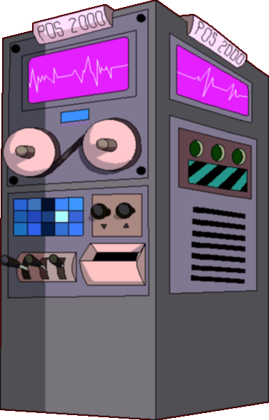

|
It's
career day, and the skool has instituted this test to determine your
future. If you already have a job, maybe you should consider a new
one with the help of the POS 2000's advice. Simply
type what you
think each blotch looks like on the line next to it. Your future
depends on it. Then scroll down to where the machine awaits. Click
on the button to input your answers. The machine will then decide
your fate and place you in a career suitable for you. Do not submit
more than once or the machine will become confused and splurt out
random careers. Now hurry up so you can get used to your wretched
fate.
- Ms. Bitters
|